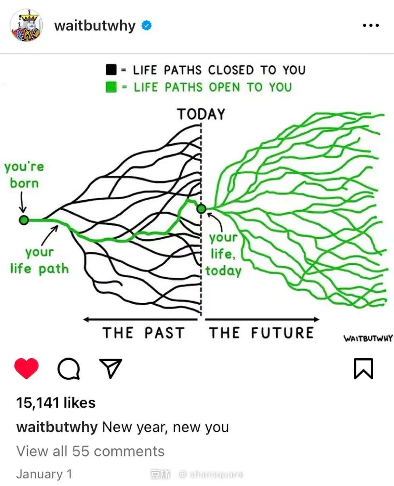

讲道理，大二上过其实还算可以，尽管我在期中考试获得了两个不及格，大物和抽代。大物这学期开始二战，抽代的话，随缘吧，zmx老师真的很好，只是我没认真学。我在2月的尾巴写下了这篇回忆，对我而言，希望自己能越过越好吧。
就目前而言，$ \dfrac{\mathrm{dGPA}}{\mathrm{d}t}>0 $, 希望我能继续保持下去…
概率论和数理统计 A-
我以为会是A以上，还是高估了自己啊。写了一篇关于Buffon 投针的小文章，梳理了一些问题推广，最后简单介绍了Crofton定理，这一积分几何里的重要定理。大概是期末考试没考好吧…
叶俊老师讲课很好，给分很好(大概？)，考试难度还行…
马克思主义原理 A- 90
王峰明老师手下留情，直接获得A-。妙哉…
题目是一个史纲题：结合课堂讲解，运用马克思主义基本原理分析近代中国从“洋务运动”到“戊戌变法”再到“五四新文化运动”的历史变迁过程。大体上从生产力和生产关系这两者之间的匹配问题去谈就可以了。
物理实验 A 90
用Latex打的报告，似乎给分还行，踩线拿的A。
形势与政策 A- 90
林毅，老师有点左，上课举例子很多，听课的话看例子就好。
高技术战争 A-
老师很有激情
高等电路分析 B+ 84
zgp，平易近人，讲课还行，只能说自己学不明白…
模拟电子技术基础 B 83
大约还是自己学不明白吧，感觉期末胜券在握，结果还是这个分数，sigh…
写到这里，好像也没什么可以写的了，我的人生好像一如既往的平淡，没有play hard 也没有 study hard.自己学数学的计划因为抽代考试被打击了，现在重新开始。我仍然不知道自己想要什么，去国外？改行？
我想，试试统计，下学期旁听一点统计的课，如果可以的话就改行罢，电机不是我想要的。
逛知乎的时候看到了这样一张图片，我想我们还是应当对自己今后的人生满怀信心的，毕竟你不知道什么时候就是你人生的转折点。
